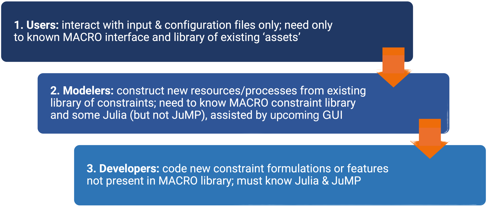

Macro
Welcome to the Macro documentation!
This documentation is a work-in-progress, so please forgive our appearance as we add material.
All feedback is welcome and please report and errors or omissions through the MacroEnergy.jl issues page.
What is Macro?
Macro is a bottom-up, multi-sectoral infrastructure optimization model for macro-energy systems. It co-optimizes the design and operation of user-defined models of multi-sector energy systems and networks. Macro allows users to explore the impact of energy policies, technology costs and performance, demand patterns, and other factors on an energy system as a whole and as separate sectors.
The main features of Macro include:
- Graph-based representation of the energy system, facilitating clear representation and analysis of energy and mass flows between sectors.
- "Plug and play" flexibility for integrating new technologies and sectors, including electricity, hydrogen, heat, and transport.
- High spatial and temporal resolution to accurately capture sector dynamics.
- Designed for distributed computing to enable large-scale optimizations.
- Tailored Benders decomposition framework for optimization.
- Open-source built using Julia and JuMP.
Structure of the documentation
The documentation contains five main sections:
Getting Started: How to install Macro and run your first cases
Tutorials: Long-form guides with worked examples, intended to help you learn how to use Macro
Guides: Short guides which walk you through how to achieve specific tasks, intended to be a day-to-day reference when working with Macro
Manual: A detailed description of Macro's components and features
Reference: A function reference for Macro's API
Recent changes
<!– BEGIN GENERATED RECENT CHANGES –>
0.1.0 - 2026-04-14
Added
- Expanded result writing and postprocessing for non-served demand, storage level, curtailment, time weights, discounted and undiscounted cost outputs, and detailed cost breakdowns.
- Added full time-series reconstruction across Monolithic, Myopic, and Benders workflows through
WriteFullTimeseries. - Added
SyntheticAmmonia,SyntheticMethanol,ThermalAmmonia,ThermalAmmoniaCCS,ThermalMethanol,ThermalMethanolCCS, andOneWayTransmissionLinkassets. - Added
StorageChargeLimitConstraint, long-duration storage feasibility constraints for Benders, and additional storage safety checks. - Added Myopic restart support,
StopAfterPeriod, optional JuMP direct-model generation, optional string names, updated default HiGHS settings, and economic utilities for present-value and cash-flow calculations.
Changed
- Redesigned node supply inputs around named supply dictionaries with per-segment
price,min, andmaxvalues. - Split edge types into explicit unidirectional and bidirectional forms.
- Changed
TransmissionLinkto model bidirectional transfer; useOneWayTransmissionLinkfor one-way transfer. - Cleaned up user extension loading through the
user_additions/layout. - Renamed emissions-tracking assets to
UpstreamEmissionsandDownstreamEmissions, with compatibility aliases for older names. - Expanded documentation and tests for TimeData, timeseries outputs, retrofitting, run workflows, outputs, constraints, assets, transmission links, supply parsing, and user additions.
Removed
- Removed legacy unified output code in favor of the expanded
write_*output suite.
Fixed
- Improved Benders output parity and cost handling by performing a final operational solve for the selected planning solution.
- Fixed and improved transmission, storage, dual, cost, and documentation behavior across the release.
Migration guide
- Update node supply inputs to the named
supplydictionary format. Each supply segment should defineprice,min, andmaxvalues. Legacyprice_supplyandmax_supplyinputs are still handled, andupdate_node_supply_inputs(...)can help convert existing cases. - Review any cases using automatically generated supply segment names. Segment names now use
segment1,segment2, and so on. - Review transmission assets.
TransmissionLinkis now bidirectional by default; useOneWayTransmissionLinkwhen directionality matters. - Update any direct use of edge types to the explicit unidirectional and bidirectional edge forms.
- Update output-processing scripts that relied on the legacy unified output code. Use the expanded
write_*output functions instead. - Review models that assumed nodes did not include balance constraints by default. Nodes now have
BalanceConstraintenabled by default. - Prefer the renamed emissions assets
UpstreamEmissionsandDownstreamEmissions. Compatibility aliases remain for older names, includingFossilFuelsUpstreamandFuelsEndUse.
For the full release history, see the changelog. <!– END GENERATED RECENT CHANGES –>
Macro development strategy
Macro is a very flexible tool for modelling energy systems. However, that flexibility also means the core architecture and functions are complex and difficult to use correctly.
To make Macro as useful and accessible to the widest audience possible we designed and developed it with three layers of abstractions in mind, each serving a different user profile:

Due to these abstractions, users and modelers will be able to achieve their goals without needing to understand every aspect of Macro. The guides section of the documentation has guides for users, modelers, and developers.